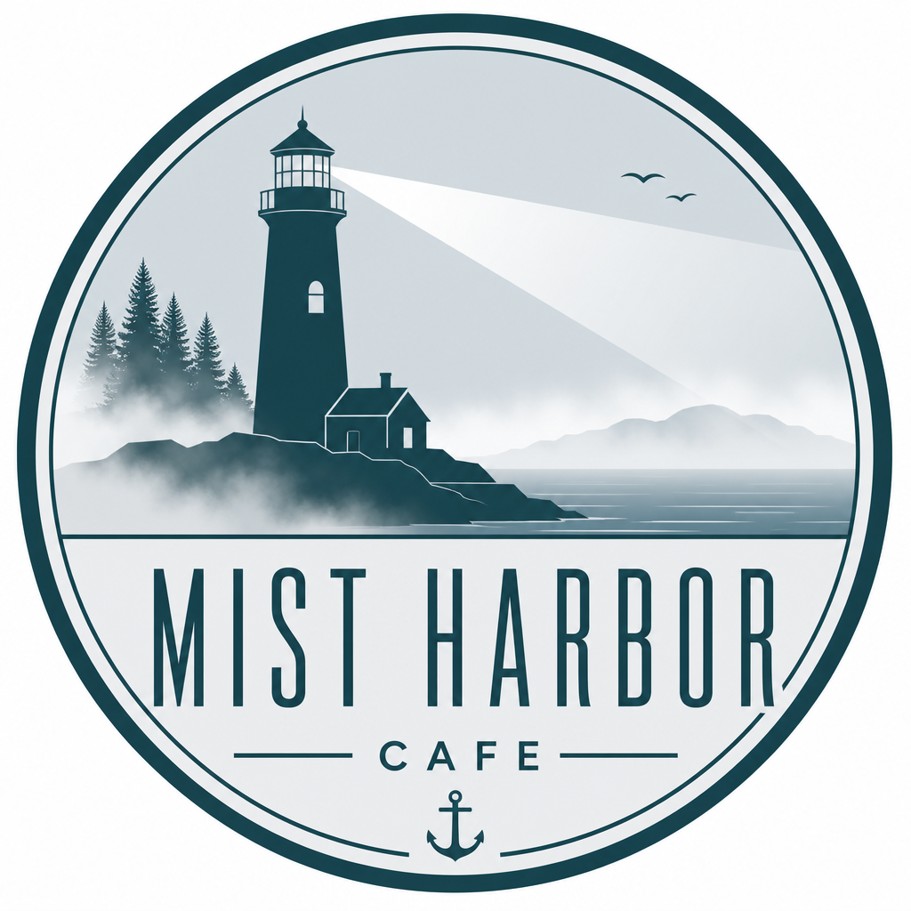

Mist HarborCoffee where the fog meets the pier. Warm glass, soft light, tide clock on the wall.
Place · Harbor pier at dawn, lighthouse beyond mist
Scan fast. Weather stays in the stake bar — never buried in a drawer.
Asymmetry lives here — soft band, uneven clip — while the envelope (stakes, Fitts CTAs) stays hoop-tight.
Action · Item · Limit.
Hold · Window seat · Releases in 15 min